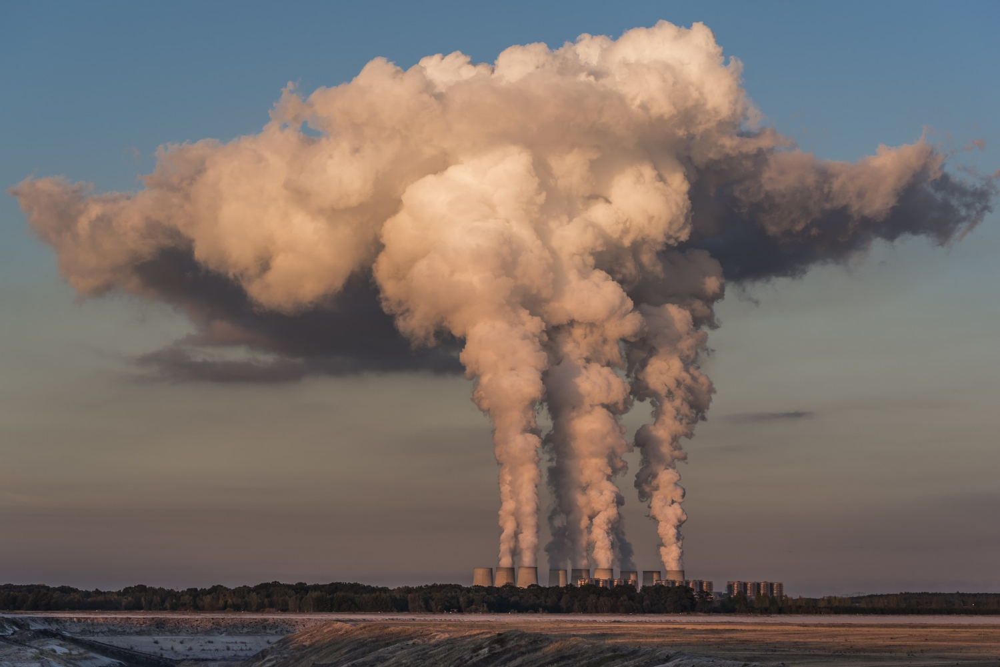
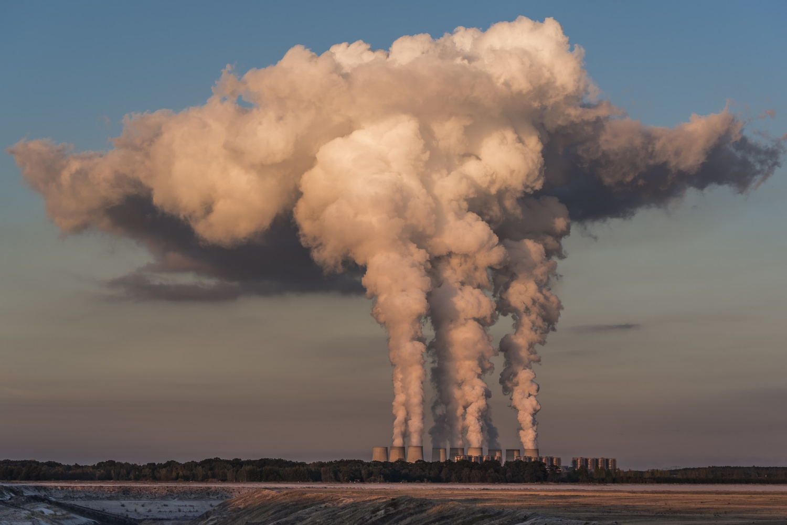

Impactos Atuais
Aumento do nível do mar:
O aumento do nível do mar, resultado direto das mudanças climáticas, é uma ameaça iminente que não pode ser ignorada. O derretimento acelerado das calotas polares e das geleiras está elevando as águas costeiras, colocando em risco comunidades em todo o mundo. Cidades litorâneas enfrentam inundações frequentes e ilhas correm o risco de desaparecer sob as ondas. Urgem ações globais coordenadas para conter esse fenômeno e proteger nossas áreas costeiras vulneráveis.
Eventos climáticos extremos:
Os eventos climáticos extremos estão se tornando uma realidade cada vez mais preocupante devido às mudanças climáticas. Ondas de calor implacáveis, secas prolongadas, inundações devastadoras e tempestades intensas estão se tornando mais frequentes e intensas, desencadeando impactos significativos em nossas vidas e meios de subsistência. Esses eventos não apenas representam uma ameaça imediata à segurança e bem-estar das comunidades, mas também causam danos generalizados à infraestrutura, afetando estradas, pontes e edifícios
Perda de biodiversidade:
O aumento da temperatura e as mudanças nos padrões climáticos estão desencadeando uma crise de extinção sem precedentes para muitas espécies de animais e plantas. Essas mudanças ambientais estão perturbando os habitats naturais e interferindo nos ciclos de vida de várias formas de vida selvagem. Espécies que dependem de ambientes específicos, como florestas tropicais ou geleiras, estão particularmente em risco. O derretimento do gelo está privando os ursos polares de sua plataforma de caça, enquanto o aumento das temperaturas está levando a mudanças na distribuição de espécies vegetais e animais em todo o mundo.
Impactos na saúde humana:
A mudança global do clima está exacerbando o risco de doenças transmitidas por mosquitos, como malária, dengue e outras enfermidades graves. À medida que as temperaturas aumentam e os padrões de precipitação se tornam mais imprevisíveis, os habitats dos mosquitos se expandem, aumentando sua proliferação e alcance geográfico. Em regiões tropicais e subtropicais, onde essas doenças são endêmicas, o aumento das temperaturas favorece a reprodução e o ciclo de vida dos mosquitos transmissores. Áreas anteriormente livres dessas doenças podem tornar-se suscetíveis à sua propagação à medida que as condições ambientais se tornam mais favoráveis para a sobrevivência dos vetores.
Impactos Potenciais
Escassez de água:
A seca e o aumento da temperatura representam uma ameaça crescente à disponibilidade de água potável em muitas regiões do mundo. Condições climáticas extremas, como períodos prolongados de seca, reduzem significativamente os recursos hídricos disponíveis, tornando mais difícil para as comunidades acessar água limpa e segura para consumo humano e atividades básicas. À medida que os reservatórios e aquíferos se esgotam devido à falta de precipitação e à evaporação acelerada causada pelo calor intenso, as fontes de água potável tornam-se cada vez mais escassas. Isso coloca pressão sobre os suprimentos existentes e pode levar a conflitos pela água entre comunidades, setores agrícolas e indústrias.
Insegurança alimentar:
As mudanças nos padrões climáticos têm o potencial de desencadear uma crise alimentar global, com consequências devastadoras para a segurança alimentar e a nutrição das populações em todo o mundo. O aumento das temperaturas, padrões de chuva imprevisíveis e eventos climáticos extremos, como secas e inundações, estão ameaçando a produção agrícola e comprometendo a capacidade das comunidades de cultivar alimentos suficientes para atender às suas necessidades básicas. Essas perturbações nos sistemas agrícolas podem levar à redução da produtividade das colheitas, perda de safras e degradação dos solos, tornando mais difícil para os agricultores obterem rendimentos adequados e garantirem o abastecimento de alimentos para suas famílias e comunidades. Além disso, eventos climáticos extremos podem destruir infraestruturas agrícolas essenciais, como sistemas de irrigação e armazenamento de alimentos, exacerbando ainda mais a escassez de alimentos em áreas afetadas.
Uma nova pandemia:
Um estudo feito por cientistas da Universidade de Ottawa, no Canadá, mostra que a próxima pandemia pode ser provocada pelo aquecimento global, por meio do degelo das calotas polares. Em artigo publicado na revista Proceedings of the Royal Society B, os pesquisadores detalharam análises feitas em amostras do solo e sedimentos do Lago Hazen, o maior lago de água doce do Ártico no mundo. O local recebe água de geleiras em processo de descongelamento. Ao realizarem o sequenciamento das amostras, foi possível encontrar material genético semelhante ao de vírus conhecidos, bem como de possíveis hospedeiros animais e vegetais.Cálculos feitos pelos cientistas mostram que o risco de vírus e bactérias “despertarem” aumenta em regiões com grande fluxo de água de degelo glacial.


 
